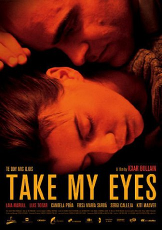

#7409 Öffne meine Augen
 
 IMDB-Wertung: 7.5 / 10
IMDB-Wertung: 7.5 / 10  Metascore: 0
Metascore: 0 
One winter night, Pilar runs away from home. With her, she takes only a few belongings and her son, Juan. Antonio soon sets out to look for her. He says Pilar is his sunshine, and what's more, "She gave him her eyes"...
Jahr: 2003
Dauer: 102 Minuten
FSK: 12
Land: Spanien Studio: Timebandits FilmsTonspuren: DD5.1 - ,
Untertitel:
Auflösung: SD (716x386) Größe: 1116 MB
Genre: Drama, Liebe
Regisseur: Icíar Bollaín
Drehbuch: Scott Lobdell
Soundtrack:
Darsteller:
- Laia Marull als Pilar
 Luis Tosar als Antonio
Luis Tosar als Antonio- Candela Peña als Ana
- Rosa Maria Sardà als Aurora
- Kiti Mánver als Rosa
 Antonio de la Torre als
Antonio de la Torre als  Francesc Garrido als
Francesc Garrido als - Javier Batanero als
 Roberto Álamo als
Roberto Álamo als - Ricardo Birnbaum als Antonio , uncredited
- Alberto Mazarro als Turista , uncredited
- Sergi Calleja als Terapeuta
- David Mooney als John
- Nicolás Fernández Luna als Juan
- Elisabet Gelabert als Lola
- Elena Irureta als Carmen
- Chus Gutiérrez als Raquel
- Aitor Merino als
- Leire Ucha als
- Javier Lago als
- Alfonso Torregrosa als
- Luchi López als
- Juan Jesús Cañero als Hombre de la terapia
- Antonio Castillo als Hombre de la terapia
- Jacinto Corella als Hombre de la terapia
- Santiago Fernández als Hombre de la terapia
- Luis López als Hombre de la terapia
- José Luis Rodríguez als Hombre de la terapia
- Ángel Pascual als Hombre de la terapia
- Carlos Bañuelos als Hombre de la terapia
- Javier Iribarren als Escocés boda , uncredited
Datei: X:\2003(N-Z)\Öffne meine Augen (2003, FSK12, 716x386).mkv seit 08.11.2017
Festplatte: HD 2003-2004-2005(A-F)
 Es gibt insgesamt 46 Filme in der Gruppe '2003(N-Z)'
Es gibt insgesamt 46 Filme in der Gruppe '2003(N-Z)'